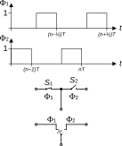
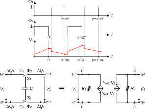
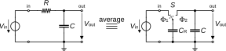
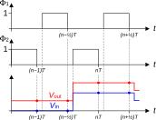
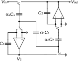
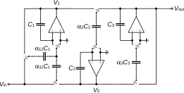
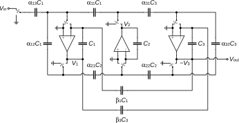

| n | p[k] | q[k] |
|---|---|---|
| 0 | 30240 | 30240 |
| 1 | -15120 | 15120 |
| 2 | 3360 | 3360 |
| 3 | -420 | 420 |
| 4 | 30 | 30 |
| 5 | -1 | 1 |
The Simulation of Switched Capacitor Circuits
Using Spice AC Simulation (Version 2)
Abstract
This notebook presents how to simulate switched-capacitor (SC) circuits and particularly filters in the frequency domain with AC simulation using Spice simulators such as LTSpice or ngspice.
1 Introduction
This notebook presents how to simulate switched-capacitor (SC) circuits and particularly filters in the frequency domain with AC simulation using Spice simulator such as LTSpice [1] or ngspice [2]. The following theory is based on [3] [4]. Because SC circuits are not linear time invariant (non-LTI), they normally cannot be simulated in AC with a conventional Spice circuit simulator. However, we can use the special library that was developed by C. Enz for the AC simulation of SC circuit with two 50% duty-cycle non-overlapping clocks. This library basically simulates the circuits in phase \(\Phi_1\) and \(\Phi_2\) concurrently and then insures the charge conservation between the two circuits of phase \(\Phi_1\) and phase \(\Phi_2\).
Note
The library for LTSpice includes symbols that can be used for schematic capture of SC circuits making the simulations of SC circuits straightforward.

We will focus on two phases SC circuits which operate with two non-overlapping phases \(\Phi_1\) and \(\Phi_2\) as shown in Figure 1. Phase \(\Phi_1\) controls switch S1, whereas phase \(\Phi_2\) controls switch S2. Switch S1 is closed when phase \(\Phi_1\) is high and switch S2 is closed when phase \(\Phi_2\) is high. Since phase \(\Phi_1\) and \(\Phi_2\) are non-overlapping, it means that switches S1 and S2 are never closed at the same time avoiding any short-circuit between the input and output. This means that they can be replaced by a toggle switch as shown in Figure 1.
We start describing the technique used for AC simulation in Spice and illustrate it with the design of various filters.
2 Simulation of SC circuits with Spice
2.1 Continuous-time model of a switched-capacitor
SC circuits are linear circuits but they are not time-invariant (LTI) because the circuit during one phase (say phase \(\Phi_1\)) is not the same than the circuit in other phases (say \(\Phi_2\) for a two phases system). However, the circuit in each phase is LTI and can be simulated with Spice. The basic idea for a two non-overlapping phases SC circuit is to enter the netlist corresponding to each phase \(\Phi_1\) and \(\Phi_2\) and couple them with a special SC component that ensures the charge conservation between the two phases.
Let’s consider a SC as shown in the left figure of Figure 2 with the phases \(\Phi_1\) and \(\Phi_2\) shown on top where \(T=1/f_s\) is the sampling period and \(D\) the duty cycle which is usually equal to 1/2.

We can write the following charge conservation equations for capacitor \(C\) \[\begin{align} \Delta Q_1((n+D)\,T) &= C \cdot [V_1((n+D)\,T^{-})-V_2(n\,T^{-})],\\ \Delta Q_2((n+1)\,T) &= C \cdot [V_2((n+1)\,T^{-})-V_1((n+D)\,T^{-})], \end{align}\] where \(\Delta Q_1\) corresponds to the change of charge on capacitor \(C\) between the end of phase \(\Phi_1\) and \(\Phi_2\) and \(\Delta Q_2\) is the change of charge on capacitor \(C\) between the end of phase \(\Phi_2\) and \(\Phi_1\). The above charge equations can be replaced by the average currents \(\overline{I_1}\) and \(\overline{I_2}\) \[\begin{align} \overline{I_1} &= \frac{C}{T} \cdot [V_1((n+D)\,T^{-})-V_2(n\,T^{-})],\\ \overline{I_2} &= \frac{C}{T} \cdot [V_2((n+1)\,T^{-})-V_1((n+D)\,T^{-})], \end{align}\] where the average currents \(\overline{I_1}\) and \(\overline{I_2}\) are defined by \[\begin{align} \overline{I_1}((n+D)\,T) &= \frac{1}{T} \cdot \int_{n\,T}^{(n+D)\,T} i_c(t)\,dt = \frac{\Delta Q_1((n+D)\,T)}{T},\\ \overline{I_2}((n+1)\,T) &= \frac{1}{T} \cdot \int_{(n+D)\,T}^{(n+1)\,T} i_c(t)\,dt = \frac{\Delta Q_2((n+1)\,T)}{T}. \end{align}\] The currents can then be written in the \(z\)-domain as \[\begin{align} \overline{I_1} &= \frac{C}{T} \cdot [V_1(z)-z^{-D}\,V_2(z)],\\ \overline{I_2} &= \frac{C}{T} \cdot [V_2(z)-z^{-(1-D)}\,V_1(z)]. \end{align}\] The above equations can be modelled by the equivalent continuous-time circuit shown on the bottom right of Figure 2 where \[\begin{equation} R_1 = R_2 = R_{eq} = \frac{T}{C} \end{equation}\] and \[\begin{align} Y_{m1} &= G_{meq} \cdot e^{-s\,D\,T},\\ Y_{m2} &= G_{meq} \cdot e^{-s\,(1-D)\,T}, \end{align}\] with \[\begin{equation} G_{meq} = \frac{1}{R_{eq}.} \end{equation}\]
The continuous-time equivalent is easy to implement in Spice using the Laplace instruction for implementing the time delays \(e^{-s\,D\,T}\) and \(e^{-s\,(1-D)\,T}\). This Laplace operator is available in LTSpice but unfortunately it is not available in ngspice. However, we can replace it by using the XSpice s_xfer element which allows implementing a transfer function given by a rational function in \(s\) provided the order of the denominator is equal or larger than the order of the numerator.
2.2 LTSpice SC components library
I designed a LTSpice library including four components which symbols are illustrated in Figure 3. The floating switched capacitor of Figure 3 (a) calls a subcircuit in my LTSpice analog.lib library having the following code:
* Switched capacitor
* ------------------
.subckt SC 1p1 2p1 1p2 2p2
* Parameters:
* C=1p
* fs=1k
* D=0.5
.param Req={1/(fs*C)} Gmeq={1/Req}
R1 1p1 2p1 {Req}
G1 2p1 1p1 1p2 2p2 Laplace=Gmeq*exp(-s*D/fs)
R2 1p2 2p2 {Req}
G2 2p2 1p2 1p1 2p1 Laplace=Gmeq*exp(-s*(1-D)/fs)
.ends SCThe gounded switched capacitor of Figure 3 (b) uses the following subckt:
* Switched capacitor with one grounded node
* -----------------------------------------
.subckt SCG 1p1 1p2 gnd
* Parameters:
* C=1p
* fs=1k
* D=0.5
.param Req={1/(fs*C)} Gmeq={1/Req}
R1 1p1 gnd {Req}
G1 gnd 1p1 1p2 gnd Laplace=Gmeq*exp(-s*D/fs)
R2 1p2 gnd {Req}
G2 gnd 1p2 1p1 gnd Laplace=Gmeq*exp(-s*(1-D)/fs)
.ends SCGThe OPAMPS need to be replaced by the switched OPAMP of Figure 3 (c) which call the following subckt:
* Switched ideal OpAmp
* --------------------
.subckt SOPAMP in+p1 in-p1 outp1 in+p2 in-p2 outp2
* Parameters:
* Av=1E5
E1 outp1 0 in+p1 in-p1 {Av}
E2 outp2 0 in+p2 in-p2 {Av}
.ends SOPAMPIn many single-ended SC circuits the OPAMP has its positive terminal connected to ground. These OPAMPs need to be replaced by corresponding switched OPAMP of Figure 3 (d) which uses the following subckt:
* Switched ideal OpAmp with grounded positive input
* -------------------------------------------------
.subckt SOPAMPG in+ in-p1 outp1 in-p2 outp2
* Parameters:
* Av=1E5
E1 outp1 0 in+ in-p1 {Av}
E2 outp2 0 in+ in-p2 {Av}
.ends SOPAMPGThe use of this library will be illustrated by many examples presented below.
2.3 Approximation of time delay in ngspice
In the implementation of SC circuits with two non-overlapping phases for the simulation with LTSpice, we are using an ideal time delay \(e^{-s \dot \Delta T}\) where \(s\) is the Laplace variable, \(\Delta T = D \cdot T\), with \(T = 1/f_s\) the sampling period and \(D\) is the duty cycle (often equal to \(D=0.5\)). This operator is available in LTSpice as \(LAPLACE = exp(-s*D*T)\) but unfortunately it is not available in ngspice. We can however use the XSpice s_xfer model which describes the transfer function given by a rational function in \(s\) with the order of the numerator \(m\) smaller than the order of the denominator \(n\). There are various ways to approximate a constant delay with a rational function in \(s\). The one that gives the best results is the Pade approximation [5] \[\begin{equation} e^{-s \cdot \Delta T} \cong \frac{\sum_{k=0}^{m} p_k \cdot (s \cdot \Delta T)^k}{\sum_{k=0}^{n} q_k \cdot (s \cdot \Delta T)^k} \end{equation}\] The coefficients in the case \(m=n\) are given by \[\begin{align} q_k &= \frac{(2 n-k)!}{k!\,(n-k)!},\\ p_k &= (-1)^k \cdot q_k. \end{align}\]
The corresponding transfer function of the ideal delay is \[\begin{equation} H(\omega) = e^{-j\omega\,\Delta T} \end{equation}\] with a magnitude and phase given by \[\begin{align} |H(\omega)| &= 1,\\ \Phi(\omega) &= arg(H(\omega)) = -\omega\,\Delta T. \end{align}\]
An ideal delay can be characterized by a constant phase delay defined as \[\begin{equation} \tau_{\Phi}(\omega) = - \frac{\Phi(\omega)}{\omega} = \Delta T \end{equation}\] or group delay \[\begin{equation} \tau_{gd}(\omega) = - \frac{d\Phi(\omega)}{d\omega} = \Delta T \end{equation}\]
We can evaluate the coefficients for an order \(n=5\).
The approximations up to order 5 are simulated in LTSpice and compared to the ideal delay also simulated with LTSpice. The results are presented in Figure 4.

In the case of \(D=0.5\), the phase delay is equal to 0.5. We see that the approximations progressively extends the phase delay to higher frequency. Since we usually are only interested on frequencies up to the Nyquist frequency \(f_2/2\), we observe that a 3rd-order approximation should already be fine.
We can simulate the delay block in ngspice using the s_xfer XSpice description. The simulation results are presented in Figure 5.

3 Example 1: First-order passive low-pass filter
The simplest example is the implementation of a 1st-order passive RC low-pass filter as illustrated in the left schematic of Figure 6.

The transfer function of the continuous-time passive RC filter is given by \[\begin{equation} H_a(s) = \frac{1}{1+s\,\tau} = \frac{1}{1+s/\omega_c} \end{equation}\] with \(\tau=1/\omega_c=R\,C\). The SC equivalent filter is shown on the right of Figure 6 where \[\begin{equation} C_R = \alpha \cdot C \end{equation}\] with \[\begin{equation} \alpha = \frac{\omega_c}{f_s} = 2\pi \, \frac{f_c}{f_s}, \end{equation}\] where \(f_s\) is the sampling frequency.

Assuming that the output voltage during phase \(\Phi_2\) settles to its final value at the end of phase \(\Phi_2\), we can write the charge conservation equation between the end of phase \(\Phi_2\), i.e. time \(t=nT\), and the end of phase \(\Phi_1\). i.e. time \((n-1/2)T\) as \[\begin{equation} (C+C_R)\,V_{out}(nT) = C_R\,V_{in}((n-1/2)T) + C\,V_{out}((n-1/2)T). \end{equation}\] Assuming that the input and output voltages change only once per period as shown in Figure 7, we have \[\begin{align} V_{in}((n-1/2)T) &= V_{in}((n-1)T),\\ V_{out}((n-1/2)T) &= V_{out}((n-1)T). \end{align}\] The above difference equation becomes \[\begin{equation} (C+C_R)\,V_{out}(nT) = C_R\,V_{in}((n-1)T) + C\,V_{out}((n-1)T), \end{equation}\] Taking the \(z\)-transform leads to \[\begin{equation} (C+C_R)\,V_{out}(z) = z^{-1}\,[C_R\,V_{in}(z) + C\,V_{out}(z)] \end{equation}\] which can be solved to derive the \(z\)-transfer function of the passive SC filter \[\begin{equation} H(z) = \frac{\alpha\,z^{-1}}{1+\alpha-z^{-1}} = \frac{\alpha}{(1+\alpha)\,z-1} \end{equation}\] with \[\begin{equation} \alpha = \frac{C_R}{C}. \end{equation}\]
As an example, we want to implement a 1st-order low-pass filter of Figure 6 with the parameters given in Table 2.
| Specification | Symbol | Value | Unit |
|---|---|---|---|
| Cut-off frequency | \(f_c\) | 1 | \(kHz\) |
| Sampling frequency | \(f_s\) | 100 | \(kHz\) |
| Capacitance | \(C\) | 1 | \(pF\) |
| Capacitance ratio | \(\alpha \triangleq \omega_c/f_s\) | 0.062832 | - |
| Switched-capacitance | \(C_R\) | 62.832 | \(fF\) |

As expected, the magnitude of the transfer function shown in Figure 6 is periodic with a period \(f_s =\) 100 \(kHz\). From Figure 6, we see that the cut-off frequency of the SC filter is equal to that of the continuous-time (CT) filter. However, because of the sampled-data nature of the SC filter, the transfer function is periodic in \(f_s\). The maximum attenuation is therefore only about \(30\,dB\).
3.1 Simulations
3.1.1 LTSpice
For the LTSpice simulations we can use the schematic shown in Figure 9.
Note
We may wonder why capacitor \(C_2\) also needs to be modeled by a switched-capacitor in LTSpice despite the fact that it is not really switched. The reason is that we need to define two separate circuits, one that represents the circuit during phase \(\Phi_1\) and the other for phase \(\Phi_2\). We cannot have a schematic node, for example node 1 in the above circuit, that is common to the circuit of phase \(\Phi_1\) and the circuit of phase \(\Phi_2\). The two separate circuits are then coupled by the implementation of charge conservation between phase \(\Phi_1\) and \(\Phi_2\).
We can now simulate the circuit in LTSpice with the same parameters as in Table 2.

With the linear x-axis in Figure 10, we can clearly see that the LTSpice AC simulation captures the sampled-data nature of the transfer function of the SC circuit which is now periodic with a period \(f_s\). It then obviously deviates from the CT transfer function for frequencies above about \(f_s/10\).
We can now simulate and plot the same circuit but with a log scale to check whether the cut-off frequency is correct.

The results shown in Figure 10 and Figure 11 show that the simulations perfectly match the theoretical results and that the cut-off frequency is correct and that the asymptotic slope of -20dB/dec above the cut-off frequency is correct as well, up to about \(f_s/10\).
We now will now simulate the circuit of Figure 9 with the ngspice simulator.
3.1.2 ngspice
We first have a look at the simulations with a linear scale for the frequency axis.

From Figure 12, we see that the ngspice simulation perfectly matches the theoretical data.
We can check the effect of the various order for the delay model in ngspice.

We can observe in Figure 13 that the 1st-order delay model shows a large discrepancy and is therefore not sufficient. The 2nd-order delay model already does a good job up to the Nyquist frequency which is what we need. The 3rd-order and 4st-order delay models show discrepancy above \(3f_s/2\). We will keep the 5th-order delay model since it does not penalize the simulation time.

The plot of Figure 14 shows that the ngspice simulation perfectly matches the theoretical result and that the cut-off frequency is correct and that the asymptotic slope of -20dB/dec above the cut-off frequency is correct as well, up to about \(f_s/10\).
We can now proceed with the simplest active SC filter, namely a 1st-order LP filter.
4 Example 2: First-order active low-pass filter
The schematic of the general 1st-order SC section is shown in Figure 15.
The \(z\)-transfer function is given by \[\begin{equation} H(z) = -\frac{(\alpha_1 + \alpha_2)\,z - \alpha_1}{(1 + \alpha_3)\,z - 1} \end{equation}\] From the above \(z\)-transfer function, we observe that the zero \(z_z = \alpha_1/(\alpha_1+\alpha_2) < 1\) is always inside the unit circle. The corresponding approximate \(s\)-domain transfer assuming \(z \cong 1 + s\,T\) is given by \[\begin{equation} H_a(s) \cong -K \cdot \frac{1 + s/\omega_z}{1 + s/\omega_p} \end{equation}\] The approximate design equations for \(\omega_z\,T \ll 1\) and \(\omega_p\,T \ll 1\) are given by \[\begin{align} \alpha_1 &\cong K,\\ \alpha_2 &\cong K\,\omega_z\,T,\\ \alpha_3 &\cong \omega_p\,T. \end{align}\]
With the circuit of Figure 15, we cannot disable the zero to implement a simple LP transfer function. Another 1st-order section having the zero outside the unit circle is shown in Figure 16.
The \(z\)-transfer function is given by \[\begin{equation} H(z) = -\frac{\alpha_1\,z - (\alpha_1 + \alpha_2)}{(1 + \alpha_3)\,z - 1} \end{equation}\] From the above \(z\)-transfer function, we observe that the zero \(z_z = 1+\alpha_2/\alpha_1 > 1\) is now outside the unit circle. The corresponding approximate \(s\)-domain transfer assuming \(z \cong 1 + s\,T\) is given by \[\begin{equation} H_a(s) \cong K \cdot \frac{1 + s/\omega_z}{1 + s/\omega_p} \end{equation}\] The approximate design equations for \(\omega_z\,T \ll 1\) and \(\omega_p\,T \ll 1\) are given by \[\begin{align} \alpha_1 &\cong K\,\frac{\omega_p\,T}{\omega_z\,T},\\ \alpha_2 &\cong K\,\omega_p\,T,\\ \alpha_3 &\cong \omega_p\,T. \end{align}\]
A LP transfer function without zero can now be implemented setting \(\omega_z\,T \rightarrow \infty\) by choosing \(\alpha_1 = 0\). If additionally the gain in the passband is unity \(K = 1\), then \(\alpha_2 = \alpha_3 = \alpha\) resulting in the schematic shown in Figure 17.
As an example, we want to implement a 1st-order LP filter with the parameters given in Table 3.
| Specification | Symbol | Value | Unit |
|---|---|---|---|
| Scaling factor | \(K\) | 1 | - |
| Cut-off frequency | \(f_c\) | 1 | \(kHz\) |
| Clock frequency | \(f_{{ck}}\) | 200 | \(kHz\) |
| Integrating capacitance | \(C\) | 3.3 | \(pF\) |
| Capacitance ratio | \(\alpha_2 = \alpha_3 = \alpha = \omega_c\,T\) | 0.031416 | - |
| Switched-capacitance | \(C_2 = \alpha \cdot C\) | 103.673 | \(fF\) |
| Switched-capacitance | \(C_3 = \alpha \cdot C\) | 103.673 | \(fF\) |

4.1 Simulations
For the Spice simulation we will assume that the OPAMP have a DC gain \(A =\) 100 and infinite bandwidth.
4.1.1 LTSpice
The 1st-order LP SC filter of Figure 17 can be simulated in LTSpice using the dedicated library. The corresponding schematic is shown below.
Notice that the integrating capacitor \(C\), which is actually not switched, is also modelled by a switched-capacitor (SC1 in the above schematic). As explained above, this is because the circuits during phase \(\Phi_1\) and \(\Phi_2\) need to be completely separated without any common nodes except the ground. We also need a special amplifier that has two different negative inputs and two different outputs, one for phase \(\Phi_1\) and the other for phase \(\Phi_2\).
The simulation result is presented in Figure 20 and compared to the theoretical transfer and the continuous-time (CT) equivalent. We see that the simulated transfer function perfectly matches the theoretical transfer function.

We now will simulate the same circuit with ngspice.
4.1.2 ngspice
We simulate the same circuit of Figure 19 with ngspice. The simulation result is presented in Figure 21 and compared to the theoretical and CT equivalent transfer functions. We can observe that the simulated transfer function perfectly matches the theoretical transfer function.


As shown in Figure 22, the ngspice simulation results perfectly match the LTSpice results.
5 Example 3: Second-order active low-pass filter
The next example is the simplest LC ladder filter shown in Figure 23 which includes only one inductor and one capacitor. In this case the load termination is infinite and therefore there is no \(6\,dB\) loss to correct for. The LC ladder component values for implementing a Butterworth approximation with a \(-3\,dB\) cut-off frequency at \(f_c =\) 20 \(kHz\) are given in Table 4.
| Symbol | Value | Unit |
|---|---|---|
| \(R\) | 1 | \(\Omega\) |
| \(L\) | 5.627 | \(\mu H\) |
| \(C\) | 11.25 | \(\mu F\) |

It can be shown that the transfer function can be implemented by the SC filter shown in Figure 24. From charge conservation analysis, it can be shown that the theoretical transfer function is given by \[\begin{equation} H_{SC}(z) = \frac{a_1\,z}{b_2\,z^2 + b_1\,z + b_0} \end{equation}\] with \[\begin{align} a_1 &= \alpha_1\,\alpha_2,\\ b_0 &= 1,\\ b_1 &= \alpha_1\,\alpha_2-\alpha_1-2,\\ b_2 &= \alpha_1+1. \end{align}\] where \[\begin{align} \alpha_1 &= \frac{1}{f_s\,\tau_1},\\ \alpha_2 &= \frac{1}{f_s\,\tau_2}, \end{align}\] with \[\begin{align} \tau_1 &= \frac{L}{R},\\ \tau_2 &= R \cdot C. \end{align}\] The integrators time constants and capacitance ratios for a clock frequency \(f_{ck} =\) 2 \(MHz\) are given in Table 5.
| Symbol | Value | Unit |
|---|---|---|
| \(\tau_1\) | 5.627 | \(\mu s\) |
| \(\tau_2\) | 11.25 | \(\mu s\) |
| \(\alpha_1\) | 0.088857 | - |
| \(\alpha_2\) | 0.044444 | - |
The theroretical transfer function \(\eqref{eqn:sc_elliptic_tf}\) is compared to that of the LC passive filter in Figure 25. We see a perfect agreement except at high frequency where we observe the deviation due to the sampled-data nature of the SC filter.

We can now check the design by LTspice and ngspice simulations.
5.1 Simulations
5.1.1 LTSpice
The 2nd-order SC Butterworth LP filter can be simulated in LTSpice using the schematic shown in Figure 26. The simulation result are compared to the theoretical transfer function in Figure 27. We see a perfect match even at high frequency.
| Symbol | Value | Unit |
|---|---|---|
| \(A\) | 100 | \(dB\) |
| \(f_{{ck}}\) | 2 | \(MHz\) |
| \(C_1\) | 3.3 | \(pF\) |
| \(C_2\) | 3.3 | \(pF\) |
| \(\alpha_1\) | 0.088857 | - |
| \(\alpha_2\) | 0.044444 | - |
| \(C_{{11}}=\alpha_1\,C_1\) | 293 | \(fF\) |
| \(C_{{12}}=\alpha_1\,C_1\) | 293 | \(fF\) |
| \(C_2=\alpha_2\,C_2\) | 147 | \(fF\) |
| \(C_{{21}}=\alpha_2\,C_2\) | 147 | \(fF\) |

5.1.2 ngspice
The ngspice simulation is performed with the same circuit as the LTSpice circuit of Figure 26 with the same component values as in Table 10. The ngspice simulation result is presented in Figure 28. Similarly to the LTSpice, we see a perfect match between the simulated and the theoretical transfer functions.
| Symbol | Value | Unit |
|---|---|---|
| \(A\) | 20 | \(dB\) |
| \(f_{{ck}}\) | 2 | \(MHz\) |
| \(C_1\) | 3.3 | \(pF\) |
| \(C_2\) | 3.3 | \(pF\) |
| \(\alpha_1\) | 0.088857 | - |
| \(\alpha_2\) | 0.044444 | - |
| \(C_{{11}}=\alpha_1\,C_1\) | 293 | \(fF\) |
| \(C_{{12}}=\alpha_1\,C_1\) | 293 | \(fF\) |
| \(C_2=\alpha_2\,C_2\) | 147 | \(fF\) |
| \(C_{{21}}=\alpha_2\,C_2\) | 147 | \(fF\) |

6 Example 4: Third-order active low-pass filter
The third example is the 3rd-order low-pass filter shown in Figure 29.

From charge conservation analysis, it can be shown that the theoretical transfer function is given by \[\begin{equation} H(z) = \frac{a_2\,z^2}{b_3\,z^3 + b_2\,z^2 + b_1\,z + b_0} \end{equation}\] with \[\begin{align} a_2 &= (\alpha_{11}+\alpha_{12})\,\alpha_2\,\alpha_3,\\ b_0 &= -1,\\ b_1 &= 3+\alpha_{12}-\alpha_{11}\,\alpha_2+\alpha_3-\alpha_2\,\alpha_3,\\ b_2 &= -3-2\,\alpha_{12}+\alpha_{11}\,\alpha_2-2\alpha_3-\alpha_{12}\,\alpha_3+\alpha_2\,\alpha_3+\alpha_{11}\,\alpha_2\,\alpha_3+\alpha_{12}\,\alpha_2\,\alpha_3,\\ b_3 &= (1+\alpha_{12})(1+\alpha_3). \end{align}\]
The specifications of the filter are given in Table 8 .
| Specification | Symbol | Value | Unit |
|---|---|---|---|
| Cut-off frequency | \(f_p\) | 20 | \(kHz\) |
| Stop-band frequency | \(f_s\) | 120 | \(kHz\) |
| Clock frequency | \(f_{{ck}}\) | 2 | \(MHz\) |
| Pass-band gain | \(G_p\) | -1 | \(dB\) |
| Stop-band gain | \(G_s\) | -40 | \(dB\) |
The capacitance ratios for a Chebyshev approximation and a clock frequency \(f_s =\) 2 \(MHz\) are given in Table 9.
| Symbol | Value | Unit |
|---|---|---|
| \(\tau_1\) | 16.1032 | \(\mu s\) |
| \(\tau_2\) | 7.91082 | \(\mu s\) |
| \(\tau_3\) | 16.1032 | \(\mu s\) |
| \(f_s\) | 2 | \(MHz\) |
| \(\alpha_{{11}}\) | 0.03105 | - |
| \(\alpha_{{12}}\) | 0.03105 | - |
| \(\alpha_2\) | 0.063205 | - |
| \(\alpha_3\) | 0.03105 | - |
The transfer function magnitude corresponding to the parameters given in Table 9 is shown in Figure 30.

6.1 Simulations
6.1.1 LTSpice
The LTSpice simulations are done with the schematic shown in Figure 31 with the capacitance values and capacitance ratios given in Table 10.
The simulated magnitude of the transfer function is compared to the theoretical one in Figure 32.
| Symbol | Value | Unit |
|---|---|---|
| \(A\) | 100 | \(dB\) |
| \(f_{{ck}}\) | 2 | \(MHz\) |
| \(\alpha_{{11}}\) | 0.03105 | - |
| \(\alpha_{{12}}\) | 0.03105 | - |
| \(\alpha_2\) | 0.063205 | - |
| \(\alpha_3\) | 0.03105 | - |
| \(C_1\) | 3.3 | \(pF\) |
| \(C_2\) | 3.3 | \(pF\) |
| \(C_3\) | 3.3 | \(pF\) |
| \(C_{{11}}=\alpha_{{11}}\,C_1\) | 102 | \(fF\) |
| \(C_{{12}}=\alpha_{{12}}\,C_1\) | 102 | \(fF\) |
| \(C_{{22}}=\alpha_2\,C_2\) | 209 | \(fF\) |
| \(C_{{33}}=\alpha_3\,C_3\) | 102 | \(fF\) |

From Figure 32, we see that the LTSpice simulation perfectly matches the theoretical transfer function.
6.1.2 ngspice
The ngspice simulation is performed with the same circuit as the LTSpice circuit of Figure 31 with the same component values of Table 10. The ngspice simulation result is presented in Figure 33. Similarly to the LTSpice, we see a perfect match between the simulated and the theoretical transfer functions.

7 Example 5: Third-order elliptic low-pass filter
The last example is a 3rd-order elliptic low-pass filter including transmission zeroes. It is based on the passive LC filter shown in Figure 34. The component values to satisfy the specifications given in Table 11 are given in Table 12.
| Specification | Symbol | Value | Unit |
|---|---|---|---|
| Cut-off frequency | \(f_p\) | 20 | \(kHz\) |
| Stop-band frequency | \(f_s\) | 120 | \(kHz\) |
| Clock frequency | \(f_{{ck}}\) | 2 | \(MHz\) |
| Pass-band gain | \(G_p\) | -1 | \(dB\) |
| Stop-band gain | \(G_s\) | -40 | \(dB\) |
| Symbol | Value | Unit |
|---|---|---|
| \(C_1\) | 15.19 | \(\mu F\) |
| \(C_2\) | 1.157 | \(\mu F\) |
| \(C_3\) | 15.19 | \(\mu F\) |
| \(L_2\) | 7.196 | \(\mu H\) |
| \(R_1\) | 1 | \(\Omega\) |
| \(R_3\) | 1 | \(\Omega\) |
It can be shown that the corresponding SC filter achieving the desired elliptic transfer function is obtained as shown in Figure 35. It is basically identical to the SC low-pass filter of Figure 29 to which the two additional non-switched capacitors \(\beta_1\,C_1\) and \(\beta_3\,C_3\) have been added to realize the transimission zero.

From charge conservation analysis, it can be shown that the theoretical \(z\)-transfer function is given by \[\begin{equation}\label{eqn:sc_elliptic_tf} H(z) = \frac{a_3\,z^3 + a_2\,z^2 + a_1\,z + a_0}{b_3\,z^3 + b_2\,z^2 + b_1\,z + b_0} \end{equation}\] with \[\begin{align} a_0 &= 0,\\ a_1 &= \alpha_{13}\,\beta_3,\\ a_2 &= \alpha_{13}\,(\alpha_{21}\,\alpha_{31}-2\,\beta_3),\\ a_3 &= \alpha_{13}\,\beta_3,\\ b_0 &= 1-\beta_1\,\beta_3,\\ b_1 &= -3-\alpha_{12}+\alpha_{11}\,\alpha_{21}+\alpha_{22}\,\alpha_{31}-\alpha_{32}-\alpha_{21}\,\alpha_{31}\,\beta_1-\alpha_{11}\,\alpha_{22}\,\beta_3+3\,\beta_1\,\beta_3,\\ b_2 &= 3+2\,\alpha_{12}-\alpha_{11}\,\alpha_{21}-\alpha_{22}\,\alpha_{31}-\alpha_{12}\,\alpha_{22}\,\alpha_{31}\\ &+2\,\alpha_{32}+\alpha_{12}\,\alpha_{32}-\alpha_{11}\,\alpha_{21}\,\alpha_{32}+\alpha_{21}\,\alpha_{31}\,\beta_1+\alpha_{11}\alpha_{22}\,\beta_3-3\,\beta_1\,\beta_3,\\ b_3 &= -1-\alpha_{12}-\alpha_{32}-\alpha_{12}\,\alpha_{32}+\beta_1\,\beta_3. \end{align}\] where \[\begin{align} \alpha_{11} &= \frac{1}{f_s\,\tau_1},\\ \alpha_{12} &= \alpha_{11},\\ \alpha_{13} &= 2\,\alpha_{11},\\ \alpha_{21} &= \frac{1}{f_s\,\tau_2},\\ \alpha_{22} &= \alpha_{21},\\ \alpha_{31} &= \frac{1}{f_s\,\tau_3},\\ \alpha_{32} &= \alpha_{31},\\ \beta_1 &= \frac{C_2}{C_2'},\\ \beta_3 &= \frac{C_2}{C_3'}, \end{align}\] with \[\begin{align} \tau_1 &= R_1 \cdot C_1',\\ \tau_2 &= \frac{L_2}{R_1},\\ \tau_3 &= R_1 \cdot C_3', \end{align}\] and \[\begin{align} C_2' &= C_1 + C_2,\\ C_3' &= C_3 + C_2. \end{align}\]
The SC filter capacitance ratios for achieving the specification of Table 11 with a clock frequency \(f_s =\) 2 \(MHz\) are given in Table 13. We can observe that the capacitance ratios are close but not equal to those of the 3rd-order SC low-pass filter without transmission zeroes given in Table 9.
| Symbol | Value | Unit |
|---|---|---|
| \(\tau_1\) | 16.347 | \(\mu s\) |
| \(\tau_2\) | 7.196 | \(\mu s\) |
| \(\tau_3\) | 16.347 | \(\mu s\) |
| \(f_{{ck}}\) | 2 | \(MHz\) |
| \(\alpha_{{11}}\) | 0.030587 | - |
| \(\alpha_{{12}}\) | 0.030587 | - |
| \(\alpha_{{13}}\) | 0.061173 | - |
| \(\alpha_{{21}}\) | 0.069483 | - |
| \(\alpha_{{22}}\) | 0.069483 | - |
| \(\alpha_{{31}}\) | 0.030587 | - |
| \(\alpha_{{32}}\) | 0.030587 | - |
| \(\beta_1\) | 0.070778 | - |
| \(\beta_3\) | 0.070778 | - |
The theoretical transfer function \(\eqref{eqn:sc_elliptic_tf}\) is compared to that of the LC passive filter corrected for the \(-6\,dB\) loss in Figure 36. We see a perfect agreement except at high frequency where we observe the deviation due to the sampled-data nature of the SC filter.

We can now check the design by LTspice and ngspice simulations.
7.1 Simulations
7.1.1 LTSpice
The 3rd-order SC elliptic LP filter can be simulated in LTSpice using the schematic shown in Figure 37 with the component values given in Table 14.
| Symbol | Value | Unit |
|---|---|---|
| \(A\) | 100 | \(dB\) |
| \(f_{{ck}}\) | 2 | \(MHz\) |
| \(\alpha_{{11}}\) | 0.030587 | - |
| \(\alpha_{{12}}\) | 0.030587 | - |
| \(\alpha_{{13}}\) | 0.061173 | - |
| \(\alpha_{{21}}\) | 0.069483 | - |
| \(\alpha_{{22}}\) | 0.069483 | - |
| \(\alpha_{{31}}\) | 0.030587 | - |
| \(\alpha_{{32}}\) | 0.030587 | - |
| \(\beta_1\) | 0.070778 | - |
| \(\beta_3\) | 0.070778 | - |
| \(C_1\) | 3.3 | \(pF\) |
| \(C_2\) | 3.3 | \(pF\) |
| \(C_3\) | 3.3 | \(pF\) |
| \(C_{{11}}=\alpha_{{11}}\,C_1\) | 101 | \(fF\) |
| \(C_{{12}}=\alpha_{{12}}\,C_1\) | 101 | \(fF\) |
| \(C_{{13}}=\alpha_{{13}}\,C_1\) | 202 | \(fF\) |
| \(C_{{14}}=\beta_1\,C_1\) | 234 | \(fF\) |
| \(C_{{21}}=\alpha_{{21}}\,C_2\) | 229 | \(fF\) |
| \(C_{{22}}=\alpha_{{22}}\,C_2\) | 229 | \(fF\) |
| \(C_{{31}}=\alpha_{{31}}\,C_3\) | 101 | \(fF\) |
| \(C_{{32}}=\alpha_{{32}}\,C_3\) | 101 | \(fF\) |
| \(C_{{33}}=\beta_3\,C_3\) | 234 | \(fF\) |
The simulated transfer function is compared to the theoretical one in Figure 38. Again we see a perfect match.


Figure 39 shows the transfer functions between the input and the output of the various OPAMPs corresponding to voltages \(V_1\), \(V_2\) and \(V_3\) in Figure 35. We see that the transfer functions \(|H_1(f)|\) and \(|H_2(f)|\) are peaking close to the cut-off frequency. This means that the voltages \(V_1\) and \(V_2\) at the OPAMPs outputs may drive the next stage into saturation. We can avoid this by equalizing the transfer functions so that all the maxima are equal to \(0\,dB\). This can be done by increasing all the capacitances connected to the output of OPAMP AO1 (voltage \(V_1\)) by a scaling factor \(k_1 =\) 1.300. This will reduce the voltage \(V_1\) while injecting the same amount of charges to the virtual ground to which the capacitances are connected to. We can do in a similar way for \(|H_2(f)|\) by scaling all the capacitances connected to the output of OPAMP AO2 by a factor \(k_2 =\) 2.279. The resulting equalized transfer functions are plotted in Figure 40. We see that all the transfer functions have a maximum gain equal to \(0\,dB\) while the input-output transfer function remains unchanged.

7.1.2 ngspice
We can also check the equalized SC filter with ngspice using the same schematic as in Figure 37 with the scaled components. For this simulation ngspice had trouble to find the DC operating point with the 5th-order delay model. Reducing it to the 4th-order model solved the problem. The simulation result is compared to the theoretical transfer function in Figure 41. We see a perfect match despite the model for the delay had to be reduced to 4 instead of 5 for the other simulations.

8 Non-ideal effects
SC circuits are affected by many non-idealities coming from the OPAMP or OTA, the switches and the capacitances.
8.1 Switches
The non-idealities of the switches icnlude:
- Finite on resistance of the MOS transistor(s),
- Resistance non linearity,
- Charge injection,
- Clock feedthrough and
- Noise.
None of these effects can be accounted for with the proposed AC simulation. The on resistance introduces a transient that may not reach steady-state.
8.2 OPAMP or OTA
The non-idealities of the OPAMP or OTA include:
- Finite DC gain,
- Finite gain-bandwidth product and
- Noise.
Since the proposed AC simulation assumes that the circuit has reached steady-state, the only non-idealitiythat can be simulated is the finite DC gain. We will simulate the 2nd-order low-pass filter with a very low gain but infinite bandwidth with the parameters given in Table 15.
| Symbol | Value | Unit |
|---|---|---|
| \(A\) | 20 | \(dB\) |
| \(f_{{ck}}\) | 2 | \(MHz\) |
| \(C_1\) | 3.3 | \(pF\) |
| \(C_2\) | 3.3 | \(pF\) |
| \(\alpha_1\) | 0.088857 | - |
| \(\alpha_2\) | 0.044444 | - |
| \(C_{{11}}=\alpha_1\,C_1\) | 293 | \(fF\) |
| \(C_{{12}}=\alpha_1\,C_1\) | 293 | \(fF\) |
| \(C_2=\alpha_2\,C_2\) | 147 | \(fF\) |
| \(C_{{21}}=\alpha_2\,C_2\) | 147 | \(fF\) |

The simulation result is compare to the ideal transfer function in Figure 42. We see that the DC gain has dropped by about 1 dB.
9 Conclusion
This notebook has presented a technique to simulate SC circuits such as filters using two non-overlapping phases using the AC simulation of a conventional Spice simulator such as LTSpice or ngspice. The circuits during phases \(\Phi_1\) and \(\Phi_2\) are described separately and run concurently. They are then coupled by additional component in order to satisfy the charge conservation between phases. A special library has been developped for LTpice (including the dedicated symbols) and ngspice to this purpose. Since the ideal time delay operator available in LTSpice does not exist in ngspice, an approximation of the ideal delay has been developped for ngspice using the XSpice s_xfer function.
This technique has then been ilustrated with several examples starting with the simple passive 1st-order low-pass filter. Then a 1st-order active low-pass SC filter has been designed and simulated in LTSpice and ngspice. A 3rd-order active SC low-pass filter implementing a Chebyshev approximation has been designed and simulated with LTSpice and ngspice. Finally, a 3rd-order active SC low-pass filter implementing an elliptic approximation has been designed and simulated with LTSpice and ngspice. In this last example, the order for the time delay model had to be reduced from 5 to 4 in order for ngspice to find the correct DC operating point. All the simulated results agree perfectly with the theoretical transfer functions demonstrating the validity of the approach. It is important to recall that this approach is limited to AC simulations only.
Of course SC circuits can be simulated in more advanced simulators like Cadence Spectre, but this simple technique allows to quickly verifiy the design without the need to run an complex simulator.
10 References
[1]
Analog Devices, “LTSpice.” https://www.analog.com/en/resources/design-tools-and-calculators/ltspice-simulator.html, 2025.
[2]
Holger Vogt, Giles Atkinson, Paolo Nenzi, “Ngspice User’s Manual Version 43.” https://ngspice.sourceforge.io/docs/ngspice-43-manual.pdf, 2024.
[3]
D. Biolek, V. Biolkova, and Z. Kolka, “AC Analysis of Idealized Switched-Capacitor Circuits in Spice-Compatible Programs,” in Proceedings of the 11th WSEAS international conference on circuits, https://www.wseas.us/e-library/conferences/2007cscc/papers/561-533.pdf, 2007, pp. 223–227.
[4]
D. Biolek, V. Biolkova, and Z. Kolka, “AC Analysis of Real Circuits with External Switching in PSpice,” in Proceedings of the 12th WSEAS international conference on circuits, https://www.wseas.us/e-library/conferences/2007cscc/papers/561-533.pdf, 2008, pp. 193–196.
[5]
L. Pekar and E. Kureckova, “Rational Approximations for Time-Delay Systems: Case Studies,” in Proceedings of the 13th WSEAS international conference on mathematical and computational methods in science and engineering, https://www.researchgate.net/publication/262392699_Rational_approximations_for_time-delay_systems_case_studies, 2011, pp. 217–222.